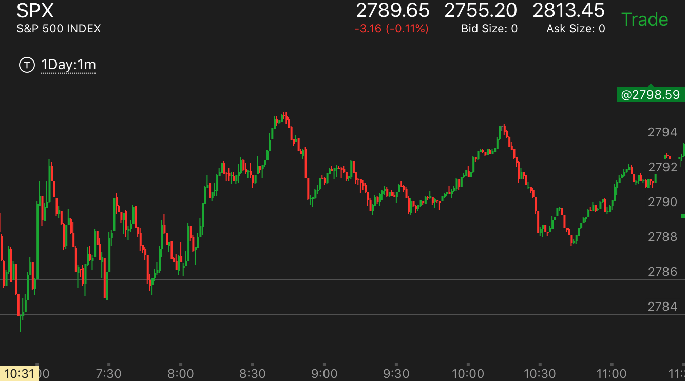
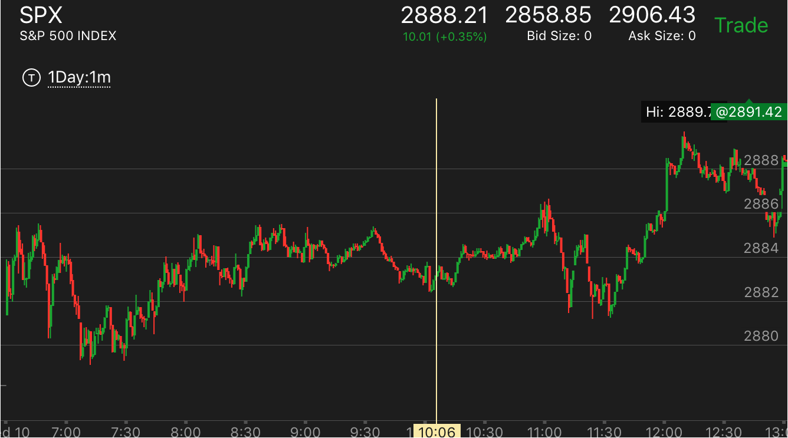
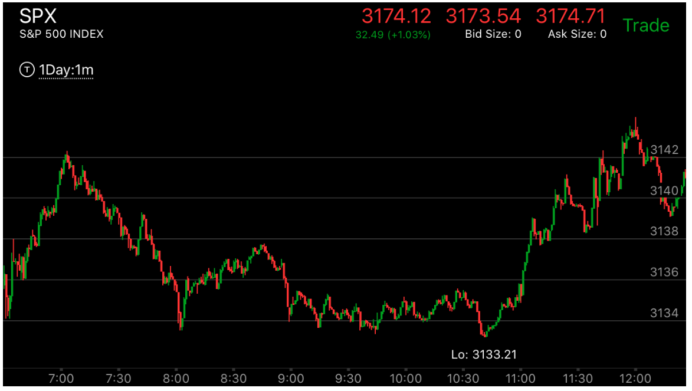
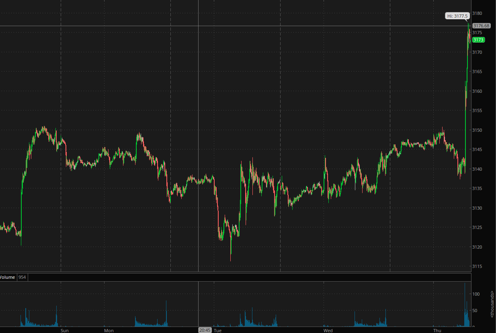

相对弱势的表示方式
- 相对弱势是一个走势的开始的方式。也是一个走势可以持续的方式。

图示：8:00开始的冲高，在8：10走平很久，估计有20分钟。它在8：30冲高，走出第二段走势，顶部走平。两段走势结束。
它很快下来。但是根据平衡走势。它一定会回到原来的位置的. 因为它下来的速度太快，在顶部停留时间不够。它下跌两段走势结束后，
在底部徘徊很久。然后再次回到高点，

图示：10：20冲高的时候，走平时间很长。上涨后，很快下来。它可以低于走平的点。但是未来一定会上涨。
当然小的走势也一定会出现上涨的样子。

图示：7：05开始上涨的第一浪。它震荡了40分钟，7：45冲高。要看到它在高点停留时间不长，
就很快大跌下来。8；40再次冲高，这次下跌速度相对比较慢，它创了比前面高点更低的低点。但是它本身也走出一个走势。
所以未来会回到高点。

图示：7：15它创新高后，下跌很快，然后再次下来。这个要比6：40的高点更加弱。
这个说明它一旦创新低后，一定会创新高。新低的原因是7：00的两段上涨走势。

图示：12:40和12：10的高点相比，12：40下跌比较慢，但是它不断下跌后，出现了下跌
完成走势。这样它就是一个上涨的相对弱势。


图示：图一处于图二的WED的白天。可以看到它是一个上涨当中的回调，结果也出现了相对
幅度弱势。图一从9：00到10：30，在底部震动了很久。超过在顶部的时间，这样也符合震荡要涨的特点。这时应该做多，
并且买第二天的期权。它尾盘上涨，收盘后，上涨，拉回，第二天开盘大涨。越过前面的高点。